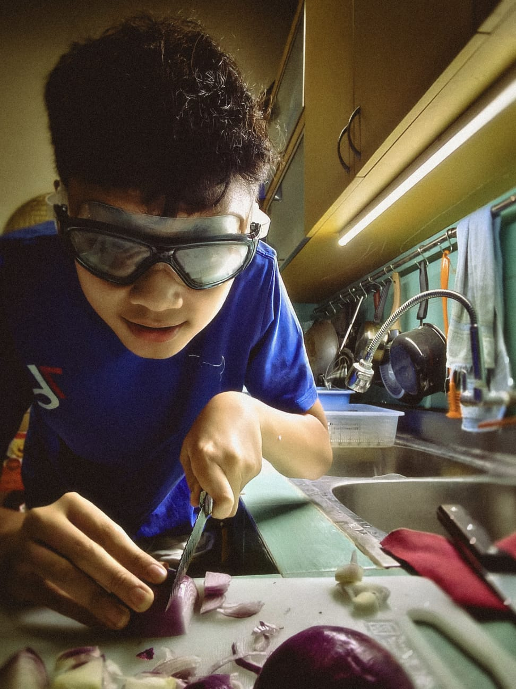

Lactic Acid Fermented Red Onion (bawang merah fermentasi asam laktat) adalah bawang merah yang diawetkan melalui proses fermentasi menggunakan air garam dan bakteri baik.
Proyek ini membahas proses fermentasi bawang merah menggunakan metode fermentasi asam laktat. Fermentasi merupakan salah satu contoh penerapan bioteknologi, yaitu pemanfaatan mikroorganisme untuk mengolah bahan pangan menjadi produk yang lebih bermanfaat. Dalam proses ini, bakteri asam laktat mengubah gula alami pada bawang merah menjadi asam laktat sehingga menghasilkan rasa yang khas dan membantu mengawetkan makanan. Bawang merah juga mengandung berbagai zat yang baik bagi kesehatan, seperti antioksidan, vitamin, dan senyawa antibakteri. Melalui proyek ini, saya mempelajari bagaimana proses fermentasi dapat meningkatkan daya simpan serta nilai kesehatan dari bawang merah.
